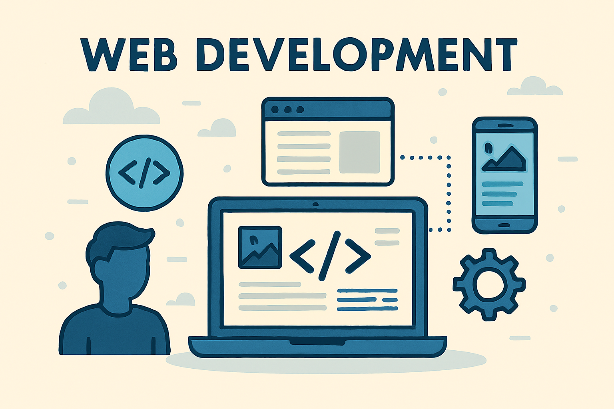
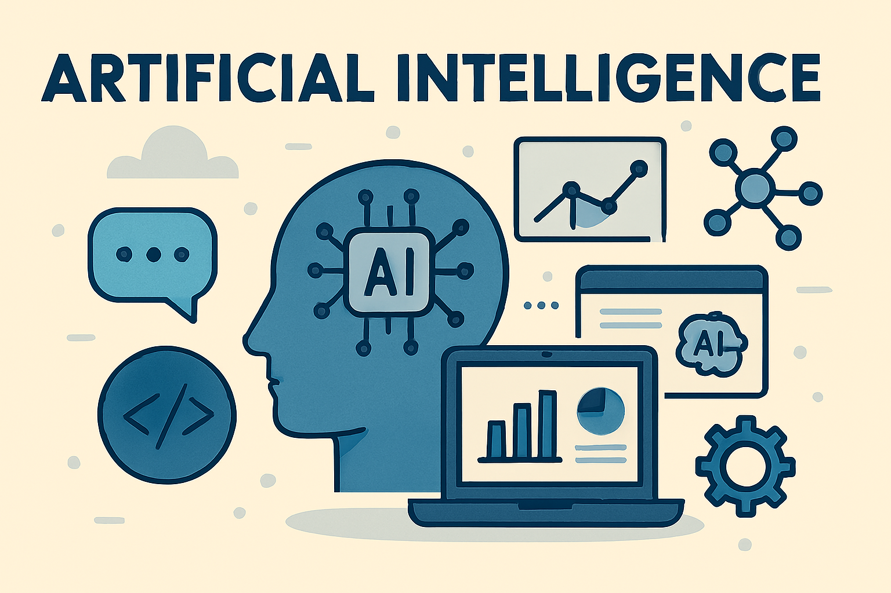
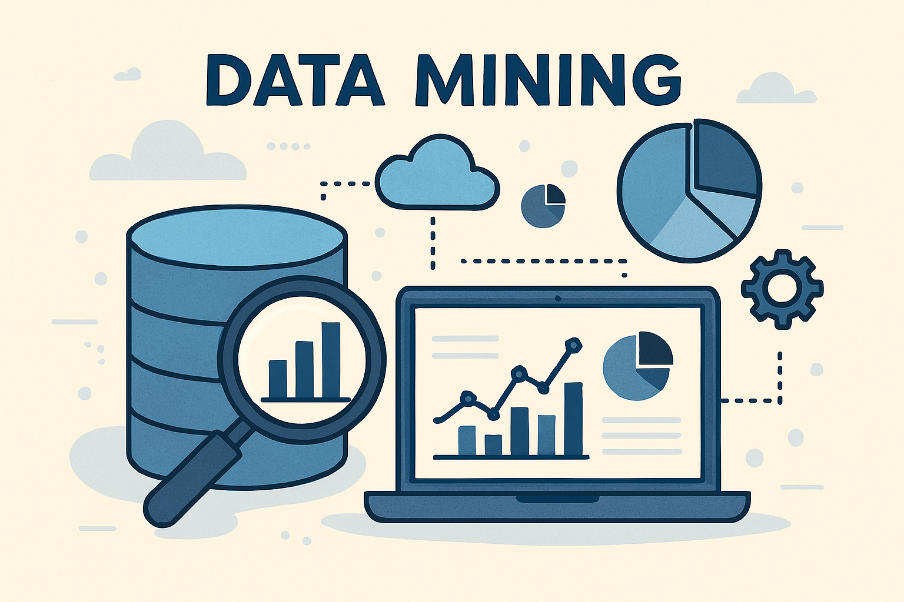

I'm Kantore.
a programmer


i'm Kantore Jean Gildas, Born on June 3, 2005 .
i am a Web Developper
Let’s collaborate, connect, and create something impactful.

Web Development |
Think of a website like a digital house. I design the rooms (the layout and visuals), make sure the doors open properly (buttons and links), and keep the lights on (the technical parts that make everything run smoothly). If you have an idea, I can turn it into a real website |
|
Using AI, I can build tools that recognize patterns in data, make predictions, or even understand human language. For example, I can create systems that sort information automatically, detect unusual activity, or help websites respond intelligently to users. |

AI |

Data-Mining |
Data mining is the process of discovering hidden patterns from large datasets. It helps to predict behaviors, detect anomalies, and identify trends. Used in fields like marketing, finance, and healthcare to support decision-making. Techniques include classification, clustering, regression, and association rules. It transforms raw data into meaningful insights and actionable knowledge. I also work on data mining to extract smart solutions from complex information. |
I’m a Python developer with a focus on data mining, AI, and web development. I love transforming raw data into actionable insights and building tools that make life easier. Every project is a chance to learn, improve, and innovate.
I specialize in data mining, web development, and AI—with Python
as my go-to tool for turning ideas into reality. From backend automation to machine learning models, I bring precision and creativity to every project. If you're looking for a developer who understands both the code and the data,
I’d love to hear from you..
© 2025 Kantore.